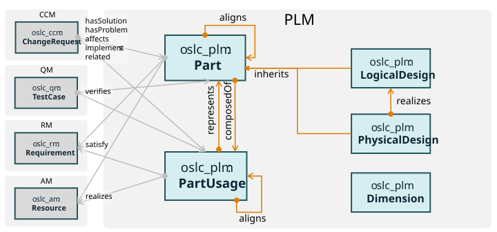

This specification defines the OSLC Product Lifecycle Management (PLM) domain, a RESTful web services interface for the PLM v2 resources and relationships between those and related resources such as product change requests, activities, tasks, requirements or test cases. To support these scenarios, this specification defines a set of HTTP-based RESTful interfaces in terms of HTTP methods: GET, POST, PUT and DELETE, as well as HTTP response codes, content type handling and resource formats.
This specification defines a RESTful web services interface for the Product Lifecycle Management (PLM) domain. This domain addresses the management of physical and logical designs of products and parts, and relationships with other OSLC resources such as requirements, testing resources and change requests. To support these scenarios, this specification defines a set of HTTP-based RESTful interfaces in terms of HTTP methods: GET, POST, PUT and DELETE, HTTP response codes, content type handling and resource formats.
The intent of this specification is to define the capabilities needed to support integration scenarios and not to provide a comprehensive interface to Product Lifecycle Management.
This specification is a [[!OSLCCore3]] compliant specification, and as such most of its content are references to [[!OSLCCore3]].
This specification defines a vocabulary for OSLC Product Lifecycle Management resources. The intent is to define resources needed to support common integration scenarios and not to provide a comprehensive definition of product lifecycle management resources.
The following is an overview of the PLM specification. The specification includes classes: Part, PartUsage, LogicalDesign and PhysicalDesign, and Dimension; links between these within the PLM domain and links to classes in other OSLC domains. The specification also defines the resources, predicate languages, and request-time contexts used to compute a resolved Bill of Materials view from a configured product structure: Effectivity, EffectivityContext, OptionSet, Option, OptionValue, VariabilityCondition, and VariabilityContext (see Effectivity and Variability).

@prefix oslc_plm: <http://open-servces.net/ns/plm#>.
@prefix dc: <http://purl.org/dc/elements/1.1/>.
@prefix dcterms: <http://purl.org/dc/terms/>.
# teamcenter plm namespaces
@prefix tc_plm_material: <http://teamcenter.com/ns/plm/material>.
@prefix tc_plm: <http://teamcenter.com/ns/plm/>.
<http://example.com/oslc/PhysicalComponent/12345>
a oslc_plm:Part;
dcterms:title "Brake Housing"@en;
dcterms:description "A caliper housing that holds the brake shoes."@en;
tc_plm:weight "1.2 kg";
tc_plm:material tc_plm_material:steel;
dcterms:identifier "gs-001-15489";
oslc_plm:boundingBox[
a oslc_plm:Dimension;
oslc_plm:height: "10 cm";
oslc_plm:width: "20 cm";
oslc_plm:length: "10 cm"];
tc_plm:relatedTo <http://example.com/oslc/PhysicalAssembly/67890>;
oslc_plm:composedOf <http://example.com/oslc/Usage/33>.
<http://example.com/oslc/Usage/33>
a oslc_plm:PartUsage;
oslc_plm:represents <http://example.com/oslc/PhysicalComponent/71350>.
<http://example.com/oslc/PhysicalComponent/71350>
a oslc_plm:Part;
dcterms:title "Brake Shoe"@en;
dcterms:description "A brake shoe carries the brake lining inside brake drums."@en;
tc_plm:weight "3.2 kg";
tc_plm:material tc_plm_material:ceramic;
dcterms:identifier "gs-001-15489";
oslc_plm:boundingBox[
a oslc_plm:Dimension;
oslc_plm:height: "5 cm";
oslc_plm:width: "5 cm";
oslc_plm:length: "10 cm"];
tc_plm:relatedTo <http://example.com/oslc/BOM/brakeshoe>.
The following sub-sections define the mandatory and optional requirements for an OSLC PLM (OSLC PLM) server.
This specification is based on [[!OSLCCore3]]. OSLC PLM servers MUST be compliant with both the core specification, MUST follow all the mandatory requirements in the normative sections of this specification, and SHOULD follow all the guidelines and recommendations in both these specifications.
An OSLC PLM server MUST implement the domain vocabulary defined in OSLC Product Lifecycle Management Version 1.0. Part 2: Vocabulary
The following table summarizes the requirements from OSLC Core Specification as well as some additional requirements specific to the PLM domain. Note that this specification further restricts some of the requirements from the OSLC Core Specification. See the previous sections in this specification or the OSLC Core Specification to get further details on each of these requirements.
| Requirement | Meaning |
|---|---|
| Absolute URIs | PLM Servers MUST use absolute URIs for all references to resources by properties |
| Unknown properties and content | PLM Servers MAY ignore unknown content and PLM clients MUST preserve unknown content. PLM Servers MAY discard such properties and continue the POST or PUT operation without warning to the client. |
| Resource Operations | PLM Servers MUST support resource operations via standard HTTP operations |
| Update and Delete | PLM Servers SHOULD support resource modifications with standard HTTP PUT and DELETE methods. PLM Servers MAY limit modifications |
| HTTP If-Match use | PLM Servers supporting update and delete of resources MUST support the standard HTTP If-Match header in PUT and DELETE for concurrency protection of resources. |
| Resource Paging | PLM Servers MAY provide paging for resources but only when specifically requested by clients |
| Partial Resource Representations | PLM Servers MAY support requests for a subset of a resource's properties via the oslc.properties URL parameter retrieval via HTTP GET |
| Partial Update | PLM Servers MAY support partial update of resources via the oslc.properties URL parameter retrieval via HTTP PUT and or using [[LDPPatch]]. |
| Discovery | PLM Servers MAY provide a Service Provider Catalog, MUST provide a Service Provider resource, and MAY provide other forms of discovery described in [[!OSLCCore3]]. |
| Creation Factories | PLM Servers MAY provide creation factories for resource formats that it supports. PLM Servers MAY support creation factories for OSLC PLM defined resources formatted as application/rdf+xml. PLM Servers MAY support creation factories for other formats, and indicate such creation factories with a non-default identifier in the oslc:usage property of the creation factory definition in the service provider document |
| Query Capabilities | PLM Servers MUST provide query capabilities on PLM resources to enable clients to query for resources. PLM Servers MAY support the full query syntax for LinkType resources. |
| Query Syntax | OSLC query capabilities MUST support the OSLC Core Query Syntax |
| Delegated Dialogs | PLM Services SHOULD offer selection delegated dialogs and MAY offer creation delegated dialogs specified via service provider resource |
| Resource Preview | PLM Services SHOULD offer resource previews for resources that may be referenced by other resources |
| Authentication | PLM Services SHOULD follow the recommendations for Authentication specified in [[!OSLCCore3]] |
| Error Responses | PLM Servers SHOULD provide error responses using OSLC Core defined error formats |
| RDF/XML Representations | PLM Servers MUST support RDF/XML representations for OSLC Defined Resources |
| XML Representations | PLM Servers MUST support XML representations that conform to the OSLC Core Guidelines for XML |
| JSON Representations | PLM Servers MAY support JSON representations; those which do MUST conform to the OSLC Core Guidelines for JSON |
| HTML Representations | PLM Servers MAY provide HTML representations for GET requests |
This specification follows the specification version guidelines given in [[!OSLCCore3]].
In addition to the namespace URIs and namespace prefixes oslc, rdf,
dcterms and foaf defined in [[!OSLCCore3]], OSLC PLM defines the namespace URI of
http://open-services.net/ns/plm# with a preferred namespace prefix of oslc_plm.
In addition to the requirements for resource representations in [[!OSLCCore3]], this section outlines further refinements and restrictions.
For HTTP GET/PUT/POST requests on all OSLC PLM and OSLC Core defined resource types,
application/rdf+xml. PLM
Clients SHOULD be prepared to deal with any valid RDF/XML document.
application/xml. The XML
representations MUST follow the guidelines outlined in the
OSLC Core Representations Guidance
to maintain compatibility with [[!OSLCCore2]].
application/json. The JSON
representations MUST follow the guidelines outlined in the
OSLC Core Representations Guidance
to maintain compatibility with [[!OSLCCore2]].
For compatibility with OSLC 2.0, OSLC PLM Servers MAY accept the OSLC Core Version header (OSLC-Core-Version: 2.0) in any HTTP request as specified in [[!OSLCCore3]], and return an OSLC PLM 2.0 representation (including the OSLC-Core-Version: 2.0 header). If the OSLC Core Version header is absent on a request, or has some undefined value, the OSLC PLM Server MUST return an PLM 2.0 representation.
OSLC PLM Servers MUST support HTTP GET requests on PLM Resources, with an Accept header of
application/rdf+xml, and return the RDF/XML representation of the resource.
OSLC PLM Servers SHOULD support HTTP GET requests on PLM Resources, with an Accept header of an HTML type (
application/html, application/xhtml), and return either an HTML/XHTML representation
of the resource or redirect the client to another URL that can (i.e. 302 Redirect).
OSLC PLM Servers SHOULD support HTTP GET requests for user interface (UI) preview of PLM Resources as defined by [[!OSLCPreview]].
OSLC PLM Servers SHOULD support resource modifications on PLM Resources with standard HTTP PUT and DELETE methods. PLM Servers MAY limit modifications in any way they want. For example a service provider may limit updates to resources to simple link properties of link types already defined in the provider. Modification methods MUST use the If-Match header for concurrency management. Providers MAY discard such properties and continue a PUT operation without warning to the client.
OSLC PLM Servers SHOULD support resource modifications on LinkType Resources (LTR) with standard HTTP PUT and DELETE methods. PLM Servers MAY limit modifications in any way they want. For example a service provider may not support additional properties. Modification methods SHOULD use the If-Match header for concurrency management.
See [[!OSLCCore3]], OSLC PLM puts no additional constraints on authentication.
See [[!OSLCCore3]], OSLC PLM puts no additional constraints on error responses
OSLC PLM Servers SHOULD support pagination of query results and MAY support pagination of a single resource's properties as defined by [[!OSLCCore3]].
An OSLC PLM server MAY support the oslc.properties URL query parameter on an HTTP GET request
on individual resource request or a collection of resources by query. If the
oslc.properties query parameter is omitted on the request, then all resource properties MUST be
provided in the response.
An OSLC PLM client MAY request that a subset of a resource's properties be updated by identifying those
properties to be modified using the oslc.properties URL parameter on a HTTP PUT request.
An OSLC PLM Server MAY support updating a subset of a resource's properties by using the [[LDPPatch]]
PATCH method.
For compatibility with [[!OSLCCore2]], an PLM Server MAY also support partial update by identifying those
properties to be modified using the oslc.properties URL parameter on a HTTP PUT request.
If the parameter oslc.properties contains a valid resource property on the request that is not
provided in the content, the server MUST set the resource's property to a null or empty value. If the
parameter oslc.properties contains an invalid resource property, then a
409 Conflict MUST be returned.
OSLC PLM Resources 2.1 Defines the vocabulary terms and constraints for OSLC Product Lifecycle Management resources. These terms and constraints are specified according to [[!OSLCCore3]].
A resolved Bill of Materials view is, in OSLC terms, a configuration in which the selected
oslc_plm:Part and oslc_plm:PartUsage versions have been further refined against
request-time parameters. Two distinct refinement dimensions are recognized in industrial PLM practice:
These two dimensions are mechanically related (both refine version bindings against a request-time context) but
use different parameter schemas and different predicate languages. This specification defines vocabulary, shapes,
and a predicate language for each, and specifies how the predicates are evaluated against contexts supplied via
the OSLC Configuration Management Selections Extensions
(oslc_config:EffectivitySelections and oslc_config:VariabilitySelections).
Because oslc_plm:PartUsage is a first-class, versioned reification of the "uses / used-by"
relationship between Parts, BOM-line participation is expressed by including or excluding a PartUsage version
through the same effectivity and variability mechanisms used for Part versions. No separate
"effectivity on relationships" mechanism is required.
A oslc_plm:Part or oslc_plm:PartUsage version MAY carry one or more
oslc_plm:Effectivity records via the oslc_plm:effectivity property. Each
Effectivity record carries:
oslc_plm:effectiveValueType — the type of value the range is expressed in. One of
oslc_plm:Date, oslc_plm:UnitNumber, oslc_plm:SerialNumber,
oslc_plm:Lot, or oslc_plm:Model.
oslc_plm:effectiveForEndItem — the end-item Part defining the serial/unit namespace.
REQUIRED for UnitNumber and SerialNumber records, since unit and serial
numbers are otherwise ambiguous across end-items. OPTIONAL for the other value types.
oslc_plm:effectiveFrom and oslc_plm:effectiveTo — the inclusive bounds of the
range. Datatypes match effectiveValueType. Absence of either bound means open-ended.
oslc_plm:effectiveReplacement (optional) — when present, the predicate evaluates as a
substitution rather than a Boolean. If the supplied context falls within
[effectiveFrom, effectiveTo], the candidate version is replaced in the resolved binding by
the version named here. This expresses release effectivity / supersede semantics. The target MUST
be a different version of the same versioned resource as the candidate.
oslc_plm:authorizedBy (optional) — the change-management resource that authorized this
record. Provides audit linkage required by many enterprise PLM workflows.
Multiple Effectivity records on a single version are interpreted as a logical OR: the version is effective under the supplied context if any of its records' predicates evaluates to true. This supports the common pattern of one part revision being effective on several end-items with different unit/serial ranges (for example, Aircraft ABC units 1–5 and Aircraft XYZ units 9–11).
For each Effectivity record carried by a candidate version, the server evaluates:
oslc_plm:EffectivityContext does not carry a value of the record's
effectiveValueType (for example, the record is a UnitNumber record but the context supplies
only a date), the record evaluates to neither true nor false; it is skipped and contributes nothing to the
OR of records on this version.
effectiveForEndItem, the context's
effectivityEndItem MUST match for the record to be considered. Otherwise the record
is skipped.
[effectiveFrom, effectiveTo]. Open-ended bounds are admitted as expected.
effectiveReplacement is absent, the record contributes the
Boolean result of the range comparison to the OR. If effectiveReplacement is present and the
range comparison is true, the record yields the replacement version URI; this preempts the Boolean OR
with a substitution outcome per
CONFIG-RES-N17 step 2 outcome (4).
If no records contribute a positive outcome (Boolean true or substitution), the version is removed from the resolved binding (CONFIG-RES-N17 step 2 outcome (3)).
An oslc_plm:EffectivityContext resource carries the parameter values supplied to effectivity
predicate evaluation. It is referenced from a request via the oslc_config.effectivity query
parameter or the Effectivity-Context request header defined in the OSLC Configuration
Management Selections Extensions.
The shape :EffectivityContextShape
permits any combination of: oslc_plm:effectivityDate, oslc_plm:effectivityEndItem,
oslc_plm:effectivityUnitNumber, oslc_plm:effectivitySerialNumber,
oslc_plm:effectivityLot, oslc_plm:effectivityModel. A client SHOULD supply only
the parameters relevant to the predicates it expects the configuration's selected versions to evaluate
against; missing parameters cause records of the corresponding type to be skipped as described above.
When a VariabilityContext resource carries effectivityUnitNumber or
effectivitySerialNumber, it MUST also carry an effectivityEndItem; a
server MUST reject contexts that lack the required end-item with 400 Bad Request.
@prefix oslc: <http://open-services.net/ns/core#> .
@prefix oslc_am: <http://open-services.net/ns/am#> .
@prefix oslc_plm: <http://open-services.net/ns/plm#> .
@prefix dcterms: <http://purl.org/dc/terms/> .
@prefix ex: <http://example.com/ns#> .
# A revision of the "Brake Caliper" part is effective on Aircraft ABC
# units 1–5, AND on Aircraft XYZ units 9–11. Released as of 2024-03-01.
<http://example.com/oslc/PhysicalComponent/12345/v3>
a oslc_plm:Part ;
dcterms:title "Brake Caliper rev C" ;
oslc_plm:effectivity ex:eff-abc-1-5 , ex:eff-xyz-9-11 .
ex:eff-abc-1-5
a oslc_plm:Effectivity ;
oslc_plm:effectiveValueType oslc_plm:UnitNumber ;
oslc_plm:effectiveForEndItem <http://example.com/oslc/Aircraft/ABC> ;
oslc_plm:effectiveFrom 1 ;
oslc_plm:effectiveTo 5 ;
oslc_plm:authorizedBy <http://example.com/oslc/ChangeRequest/CR-1042> .
ex:eff-xyz-9-11
a oslc_plm:Effectivity ;
oslc_plm:effectiveValueType oslc_plm:UnitNumber ;
oslc_plm:effectiveForEndItem <http://example.com/oslc/Aircraft/XYZ> ;
oslc_plm:effectiveFrom 9 ;
oslc_plm:effectiveTo 11 ;
oslc_plm:authorizedBy <http://example.com/oslc/ChangeRequest/CR-1042> .
# Caliper rev D supersedes rev C on Aircraft ABC starting unit 6:
<http://example.com/oslc/PhysicalComponent/12345/v3>
oslc_plm:effectivity ex:eff-supersede .
ex:eff-supersede
a oslc_plm:Effectivity ;
oslc_plm:effectiveValueType oslc_plm:UnitNumber ;
oslc_plm:effectiveForEndItem <http://example.com/oslc/Aircraft/ABC> ;
oslc_plm:effectiveFrom 6 ;
oslc_plm:effectiveReplacement
<http://example.com/oslc/PhysicalComponent/12345/v4> .
# Request context: Aircraft ABC, unit 7
ex:ctx-abc-7
a oslc_plm:EffectivityContext ;
oslc_plm:effectivityEndItem <http://example.com/oslc/Aircraft/ABC> ;
oslc_plm:effectivityUnitNumber 7 .
Resolving a configuration that selects PhysicalComponent/12345/v3 as a candidate against
ex:ctx-abc-7 evaluates the three records: the first (Aircraft ABC 1–5) is out of range; the
second (Aircraft XYZ 9–11) is the wrong end-item; the third (Aircraft ABC 6+) matches and yields the
substitution to PhysicalComponent/12345/v4. The resolved binding is therefore v4.
Variability is described against an oslc_plm:OptionSet — a named container of
oslc_plm:Option resources, each of which has one or more oslc_plm:OptionValue
members. A product family typically has a single OptionSet (with Options such as Engine, Transmission,
Color, Market). OptionSets, Options, and OptionValues are versioned resources (subclasses of
oslc_am:Resource) so their evolution can be managed by the OSLC Configuration Management
mechanisms.
A oslc_plm:Part or oslc_plm:PartUsage version MAY carry at most one
oslc_plm:VariabilityCondition via the oslc_plm:variabilityCondition property. The
condition is a tree of boolean operators (oslc_plm:and, oslc_plm:or,
oslc_plm:not) over terminals (oslc_plm:optionEquals). Each terminal asserts that a
named Option equals one of a set of OptionValues; multiple values within one terminal are OR-combined.
A Part or PartUsage version with no variabilityCondition is treated as unconditionally present (the
condition evaluates to true for every VariabilityContext).
An oslc_plm:VariabilityContext resource carries the OptionValue choices supplied to
variability predicate evaluation. It is referenced from a request via the
oslc_config.variability query parameter or the Variability-Context request
header defined in the OSLC Configuration Management Selections Extensions.
The context names the oslc_plm:appliesToOptionSet it makes assignments over and lists the
chosen OptionValues via oslc_plm:choice. A complete context SHOULD carry exactly one
OptionValue per Option in the OptionSet. A partial context (some Options unassigned) is permitted; terminals
referring to unassigned Options evaluate to neither true nor false, and the surrounding boolean is
handled per three-valued logic (true OR ? = true, false AND ? =
false, otherwise the candidate is retained pending fuller resolution).
# Option model
ex:OptionSet/v1 a oslc_plm:OptionSet ;
dcterms:title "MyProductFamily Options" ;
oslc_plm:hasOption ex:Option/Engine , ex:Option/Market .
ex:Option/Engine a oslc_plm:Option ; dcterms:title "Engine" ;
oslc_plm:hasOptionValue ex:OV/Engine-V6 , ex:OV/Engine-V8 .
ex:Option/Market a oslc_plm:Option ; dcterms:title "Market" ;
oslc_plm:hasOptionValue ex:OV/Market-EU , ex:OV/Market-US .
# A turbocharger PartUsage that only applies when Engine = V8 AND Market = EU
<http://example.com/oslc/Usage/turbo>
a oslc_plm:PartUsage ;
oslc_plm:variabilityCondition ex:vc-turbo .
ex:vc-turbo a oslc_plm:VariabilityCondition ;
oslc_plm:and (
[ a oslc_plm:VariabilityCondition ;
oslc_plm:optionEquals ( ex:Option/Engine ex:OV/Engine-V8 ) ]
[ a oslc_plm:VariabilityCondition ;
oslc_plm:optionEquals ( ex:Option/Market ex:OV/Market-EU ) ]
) .
# Request context: V8 + EU
ex:ctx-v8-eu a oslc_plm:VariabilityContext ;
oslc_plm:appliesToOptionSet ex:OptionSet/v1 ;
oslc_plm:choice ex:OV/Engine-V8 , ex:OV/Market-EU .
Resolving a configuration that selects Usage/turbo as a candidate against
ex:ctx-v8-eu evaluates the AND of two terminals: both match the supplied choices, so the
condition is true and the usage participates in the resolved BOM. A request against a
V6 + EU context yields false on the first terminal, the AND is false,
and the usage is removed.
When a configuration declares both oslc_config:EffectivitySelections and
oslc_config:VariabilitySelections, the Configuration Management Selections Extensions specify
that variability resolution is performed first, then effectivity refinement. A candidate Part or PartUsage
version's variability condition is evaluated against the VariabilityContext; if false, the candidate is
removed before effectivity refinement runs. If true (or absent), the candidate's Effectivity records are
evaluated against the EffectivityContext, with the outcomes (Boolean, substitution, or removal) defined in
this specification.
The order is normative because effectivity records on a Part revision MAY presuppose option choices already resolved by variability — for example, "this revision is effective starting unit 50 only when Market = EU" can be expressed as a variability condition gating the Effectivity record's presence, with the Effectivity record itself carrying just the unit-number range.
The vocabulary defined in this section is designed to map cleanly to the effectivity and variability concepts used in widely-deployed PLM systems:
oslc_plm:Effectivity record corresponds to a Windchill
Effectivity object (WTDatedEffectivity, WTSerialNumberedEffectivity,
ProductBlockEffectivity, ProductLotNumberEffectivity, ProductSerialNumberEffectivity)
attached to a WTPart revision. effectiveForEndItem corresponds to Windchill's
EffContext. effectiveReplacement corresponds to the supersedes/supersededBy
replacement that an Effectivity ConfigSpec resolves through. Windchill's Option Filter for configurable
modules corresponds to oslc_plm:VariabilityCondition.
oslc_plm:Effectivity record corresponds to an
Effectivity object on a ReleaseStatus of an ItemRevision (revision effectivity) or to an occurrence
effectivity on a BOM line — handled here via effectivity on a PartUsage version.
effectiveForEndItem corresponds to Teamcenter's End Item / Configuration Item.
oslc_plm:VariabilityCondition corresponds to Teamcenter's Variant Condition; the AND/OR/NOT/EQ
structure mirrors Modular Variant Language (MVL).
oslc_plm:Effectivity record corresponds to an Aras
Effectivity Expression on a Part BOM relationship row. The OptionSet / Option / OptionValue model
corresponds to Aras's Features / Options structure in Configurator Services and Variant Management.
Alignment with ISO 10303 (STEP) configuration effectivity concepts is a target for a future revision; the
STEP effectivity, dated_effectivity, and serial_numbered_effectivity
entities are direct counterparts to the value-type identifiers defined here.
A PLM Server that claims conformance to this section MUST:
oslc_plm:Effectivity and oslc_plm:VariabilityCondition resources as values
of oslc_plm:effectivity and oslc_plm:variabilityCondition on
oslc_plm:Part and oslc_plm:PartUsage versions per the shapes defined in
plm-shapes.ttl.
oslc_plm:EffectivityContext resources at URIs referenced by the
oslc_config.effectivity query parameter, and oslc_plm:VariabilityContext
resources at URIs referenced by the oslc_config.variability query parameter, per the OSLC
Configuration Management Selections Extensions.
effectiveReplacement is present.
effectivityUnitNumber or
effectivitySerialNumber without effectivityEndItem with 400 Bad Request.
A PLM Server MAY claim conformance to one of effectivity or variability in isolation, omitting the conformance items for the other.
This non-normative worked example illustrates the principal resource classes and relationships defined by this
specification — oslc_plm:Part, oslc_plm:PartUsage, the composition properties between
them, and (for the dimensions covered in this revision) oslc_plm:Effectivity records on PartUsage
versions. The same example is referenced from the OSLC Configuration Management Selections Extensions to ground
the post-filter semantics of oslc_config:EffectivitySelections. Variability is not exercised here;
a parallel example may be added in a subsequent revision.
The Eco Line washing machine is composed of a Motor, a Housing, and a Control Unit. The Housing is in turn
composed of an Upper Housing and a Lower Housing. Each subsystem is an oslc_plm:Part with one or
more revisions; each parent→child usage is reified as an oslc_plm:PartUsage whose versions pin
specific child revisions and carry the effectivity records that determine which usage is active for a given
Effectivity-Context.
WashingMachine ("Eco Line") ─┬─ uses ──> Motor
├─ uses ──> Housing ─┬─ uses ──> UpperHousing
│ └─ uses ──> LowerHousing
└─ uses ──> ControlUnit
Part revisions:
Motor — V12.8, V12.9Housing — V4.1, V4.2, V4.3, V5.0UpperHousing — V8.6LowerHousing — V7.9ControlUnit — v1PartUsage versions (each pinning a specific child Part revision; effectivity is carried by the PartUsage version, not the child Part revision, so that the same child revision can be used under different parent-side conditions):
| PartUsage | Version | Pins | Effectivity |
|---|---|---|---|
WashingMachine → Motor | usage_pre27 | Motor V12.8 | until 2027-06-30 |
WashingMachine → Motor | usage_27on | Motor V12.9 | from 2027-07-01 |
WashingMachine → Housing | usage_pre27 | Housing V4.1 | until 2026-12-31 |
WashingMachine → Housing | usage_27 | Housing V4.2 | 2027-01-01 to 2027-12-31 |
WashingMachine → Housing | usage_28h1 | Housing V4.3 | 2028-01-01 to 2028-06-30 |
WashingMachine → Housing | usage_28h2 | Housing V5.0 | from 2028-07-01 |
WashingMachine → ControlUnit | v1 | ControlUnit v1 | always |
Housing → UpperHousing | v1 | UpperHousing V8.6 | always |
Housing → LowerHousing | v1 | LowerHousing V7.9 | always |
The Parts, PartUsages, their versions, and the effectivity records (sketched for two of the
WashingMachine → Housing PartUsage versions; the other rows in the table above follow the
same pattern):
@prefix oslc: <http://open-services.net/ns/core#> .
@prefix oslc_am: <http://open-services.net/ns/am#> .
@prefix oslc_config: <http://open-services.net/ns/config#> .
@prefix oslc_plm: <http://open-services.net/ns/plm#> .
@prefix dcterms: <http://purl.org/dc/terms/> .
@prefix xsd: <http://www.w3.org/2001/XMLSchema#> .
@prefix em: <https://example.com/ecoline/> .
# Parts (each is also an oslc_config:Component containing its own configurations).
em:WashingMachine a oslc_plm:Part ; dcterms:title "Eco Line Washing Machine" .
em:Motor a oslc_plm:Part ; dcterms:title "Motor" .
em:Housing a oslc_plm:Part ; dcterms:title "Housing" .
em:UpperHousing a oslc_plm:Part ; dcterms:title "Upper Housing" .
em:LowerHousing a oslc_plm:Part ; dcterms:title "Lower Housing" .
em:ControlUnit a oslc_plm:Part ; dcterms:title "Control Unit" .
# Part-level composition: which PartUsages each parent Part is composed of.
em:WashingMachine oslc_plm:composedOfPartUsage em:Usage_WM_Motor ,
em:Usage_WM_Housing ,
em:Usage_WM_ControlUnit .
em:Housing oslc_plm:composedOfPartUsage em:Usage_Housing_Upper ,
em:Usage_Housing_Lower .
# PartUsage concept resources point to the child Part they represent.
em:Usage_WM_Motor a oslc_plm:PartUsage ; oslc_plm:representsPart em:Motor .
em:Usage_WM_Housing a oslc_plm:PartUsage ; oslc_plm:representsPart em:Housing .
em:Usage_WM_ControlUnit a oslc_plm:PartUsage ; oslc_plm:representsPart em:ControlUnit .
em:Usage_Housing_Upper a oslc_plm:PartUsage ; oslc_plm:representsPart em:UpperHousing .
em:Usage_Housing_Lower a oslc_plm:PartUsage ; oslc_plm:representsPart em:LowerHousing .
# Example PartUsage versions with effectivity (sketched for Housing; same pattern
# applies to the Motor PartUsage versions and to the ControlUnit PartUsage):
em:Usage_WM_Housing_pre27 a oslc_config:VersionResource , oslc_plm:PartUsage ;
oslc_plm:effectivity [
a oslc_plm:Effectivity ;
oslc_plm:effectiveValueType oslc_plm:Date ;
oslc_plm:effectiveTo "2026-12-31"^^xsd:date
] .
em:Usage_WM_Housing_27 a oslc_config:VersionResource , oslc_plm:PartUsage ;
oslc_plm:effectivity [
a oslc_plm:Effectivity ;
oslc_plm:effectiveValueType oslc_plm:Date ;
oslc_plm:effectiveFrom "2027-01-01"^^xsd:date ;
oslc_plm:effectiveTo "2027-12-31"^^xsd:date
] .
# Effectivity context: build date of 2027-06-01.
em:Ctx_2027_06_01 a oslc_plm:EffectivityContext ;
oslc_plm:effectivityDate "2027-06-01"^^xsd:date .
A configuration of em:WashingMachine with
oslc_config:effectivityContext em:Ctx_2027_06_01 drives the OSLC Configuration Management
Selections Extensions to populate the configuration's
oslc_config:EffectivitySelections.selects with the PartUsage versions whose effectivity
records evaluate to true against the context date:
em:Usage_WM_Motor_pre27 (effective until 2027-06-30) — ✓em:Usage_WM_Housing_27 (effective 2027) — ✓em:Usage_WM_ControlUnit_v1 (always effective) — ✓
All other PartUsage versions of the same three usages fail effectivity for this context and are absent
from selects. The Housing's own configuration (Housing V4.2, pinned by
em:Usage_WM_Housing_27) carries unconditional Housing → UpperHousing and
Housing → LowerHousing PartUsage versions in its own selections; recursive walking through
the configuration's PartUsage versions yields the resolved BOM.
See the OSLC Configuration Management Selections Extensions, Worked Example — Eco Line Washing Machine,
for the corresponding oslc_config:EffectivitySelections turtle, the stream/baseline distinction,
and the freeze semantics of a baseline.
OSLC PLM servers SHOULD support Resource Shapes as defined in [[!OSLCShapes]].
OSLC PLM Servers MUST provide a ServiceProvider Resource that can be retrieved at a implementation dependent URI.
OSLC PLM Servers MUST provide a ServiceProviderCatalog Resource that can be retrieved at a implementation dependent URI.
OSLC PLM Servers MUST provide an oslc:serviceProvider property for their defined resources that
will be the URI to a ServiceProvider Resource. This does not prevent PLM Servers from providing multiple
servie provider properties with different values, if the service provider supports multiple OSLC domain
specifications, and the resource is applicable to multiple domains.
OSLC PLM Servers MUST supply a value of http://open-services.net/ns/plm# for the property
oslc:domain on either oslc:ServiceProvider or
oslc:ServiceProviderCatalog resources.
OSLC PLM Servers MAY support CreationFactories as defined by [[!OSLCCore3]].
OSLC PLM Servers MAY discard properties it does not recognize and continue the POST operation without warning to the client. The returned resource will contain the accepted properties (and server generated properties like the dcterms:identifer) so clients will be able to confirm if required what was accepted.
If OSLC PLM Servers support the creation of resources from the OSLC defined
oslc_plm:Part format, there MUST be at least one Creation Factory entry in the Services
definition, and its oslc:usage property MUST be set to
http://open-services/ns/core#default. The oslc:resourceType MUST be set to
http://open-services.net/ns/plm#Part.
If OSLC PLM Servers support the creation of resources from a resource other than
oslc_plm:Part, there MUST be a separate creation services definition whose
oslc:usage property MUST NOT be set to http://open-services/ns/core#default.
OSLC PLM Servers SHOULD support the Query Capabilities as defined by [[!OSLCCore3]] for all PLM resources.
If the service provider supports query capability for PLM resources, it MUST support the following query parameters:
oslc.whereoslc.searchTermsOSLC PLM Servers SHOULD support the selection of resources by delegated selection dialogs as defined by [[!OSLCCore3]].
OSLC PLM Servers MAY support the creation of resources by delegated creation dialogs as defined by [[!OSLCCore3]].
In oslc:Dialog elements, the two optional child elements; oslc:hintWidth and
oslc:hintHeight specify the suggested size of the dialog or frame to render the HTML content in.
Expected size values are defined by CSS length units.
The following individuals have participated in the creation of this specification and are gratefully acknowledged:
Participants:
James Amsden, MID (Editor)
Ed Gentry, MID (Editor)